Victor Mesa Jr.

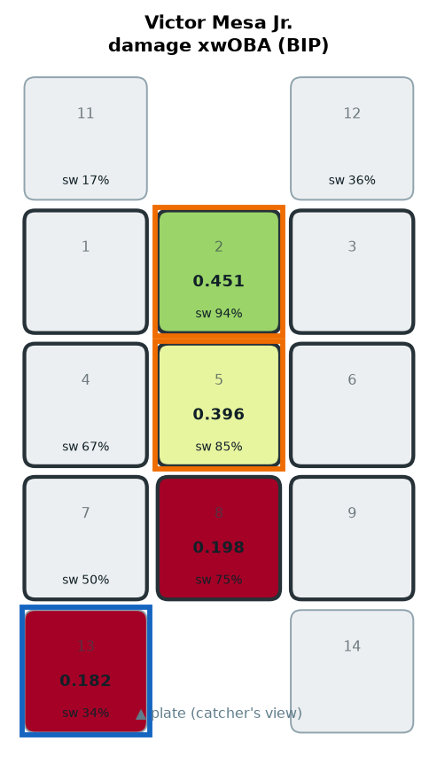
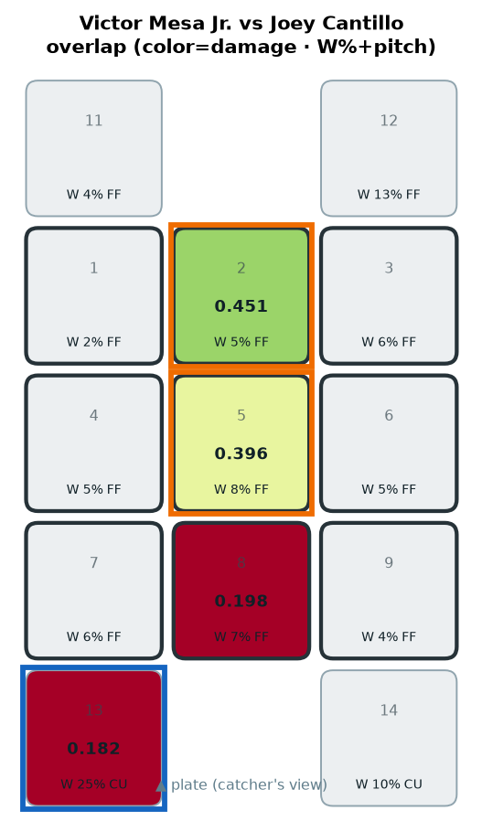
COLD OUT-DN-3B ← mainly CU (W 24.5%)
COLD OUT-DN-3B
Junior Caminero

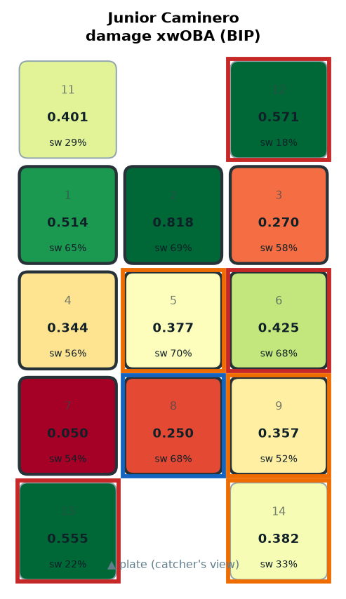
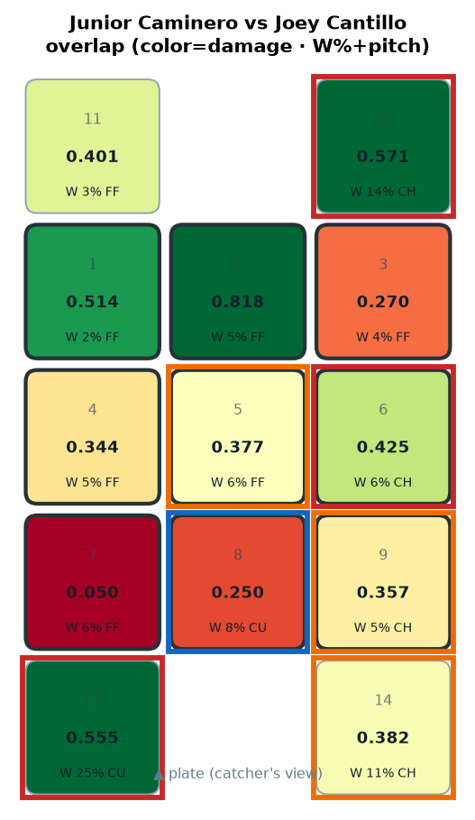
HOT OUT-DN-3B ← mainly CU (W 24.6%) · HOT OUT-UP-1B ← mainly CH (W 13.7%) · HOT MID-AWAY ← mainly CH (W 6.3%) · COLD LO-MID ← mainly CU (W 7.6%)
HOT OUT-DN-3B · HOT OUT-UP-1B · HOT MID-AWAY · COLD LO-MID
Yandy Díaz

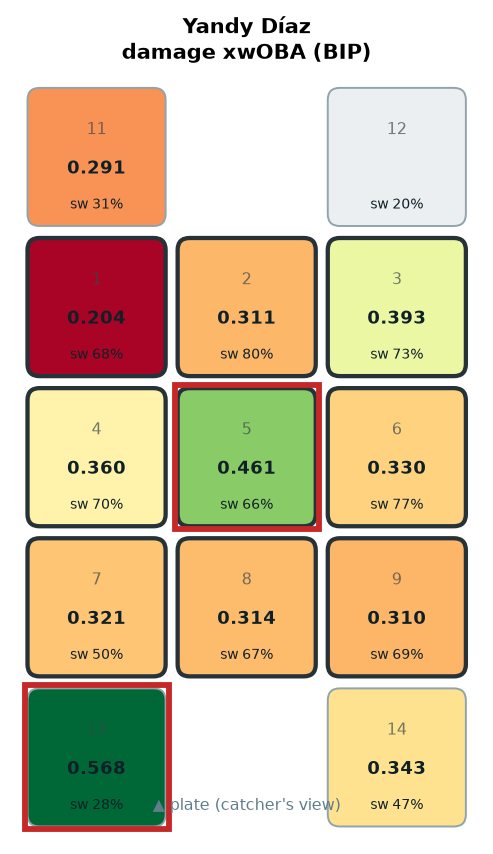
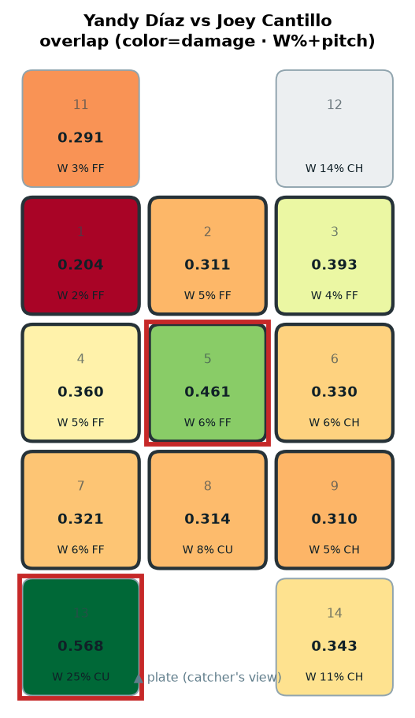
HOT OUT-DN-3B ← mainly CU (W 24.6%) · HOT HEART ← mainly FF (W 6.5%)
HOT OUT-DN-3B · HOT HEART
Jonathan Aranda
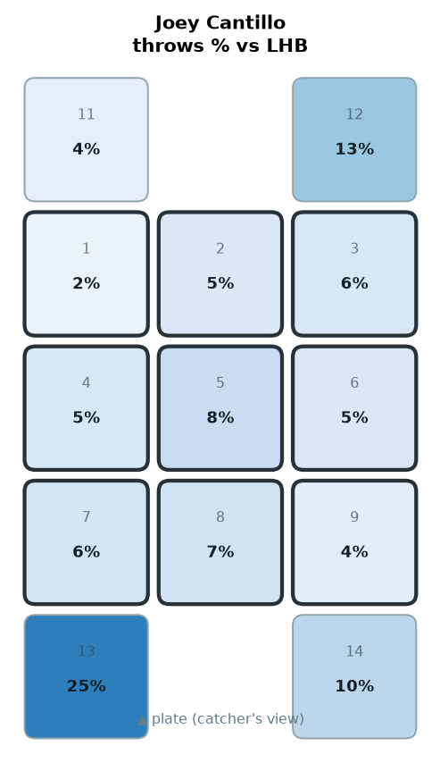
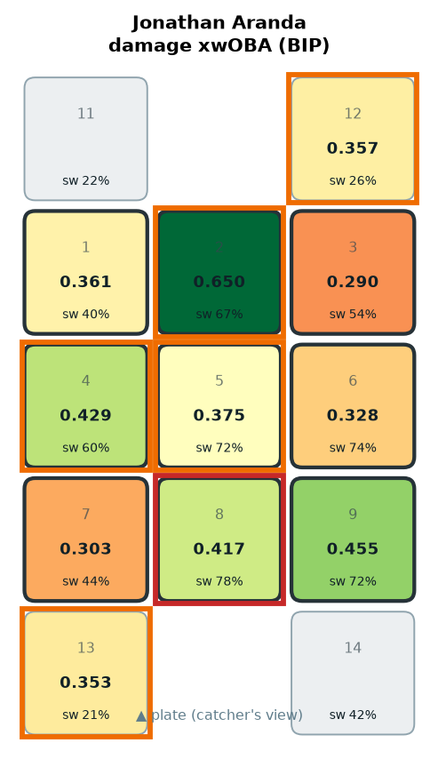
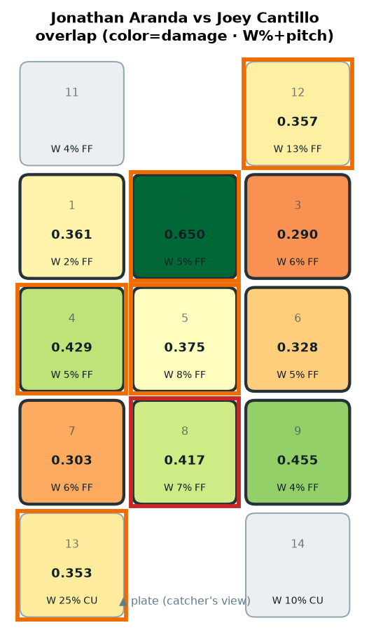
HOT LO-MID ← mainly FF (W 6.7%)
HOT LO-MID
Jonny DeLuca
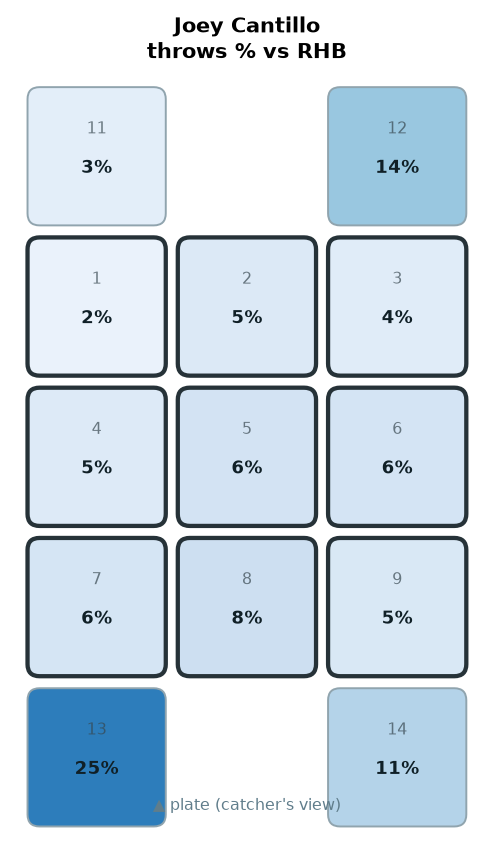
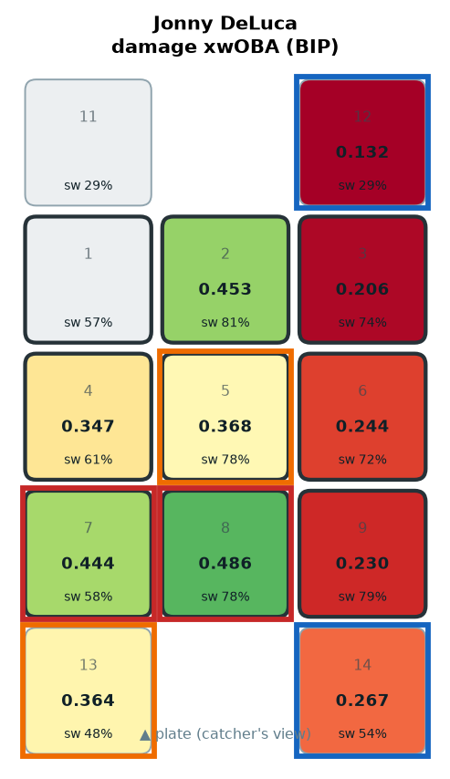
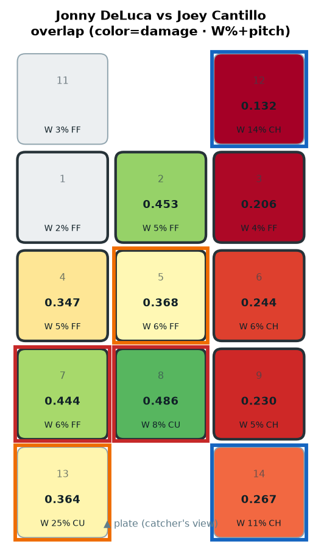
HOT LO-MID ← mainly CU (W 7.6%) · COLD OUT-DN-1B ← mainly CH (W 10.7%) · COLD OUT-UP-1B ← mainly CH (W 13.7%) · HOT LO-IN ← mainly FF (W 6.1%)
HOT LO-MID · COLD OUT-DN-1B · COLD OUT-UP-1B · HOT LO-IN
Chandler Simpson

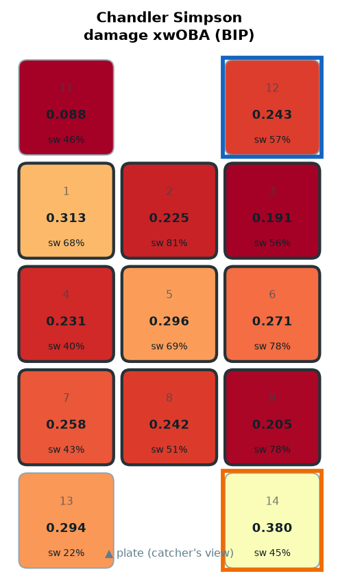
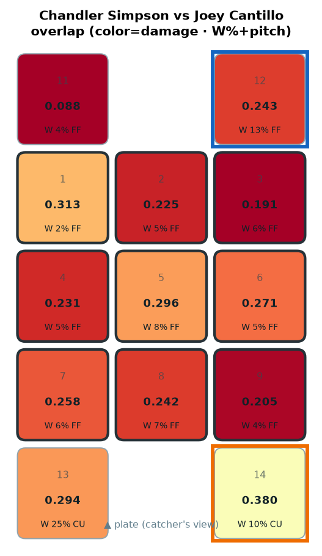
COLD OUT-UP-1B ← mainly FF (W 13.4%)
COLD OUT-UP-1B
Liam Hicks

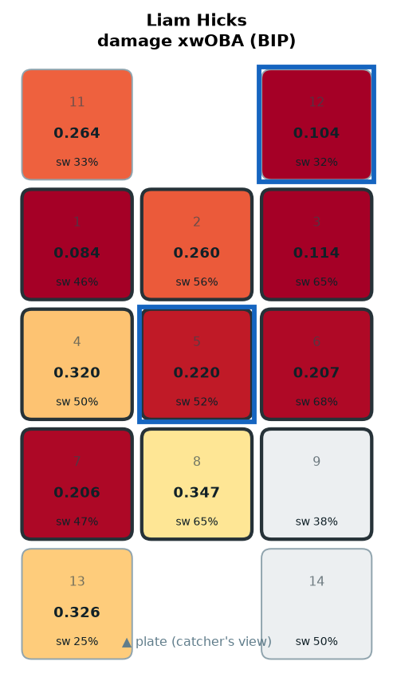
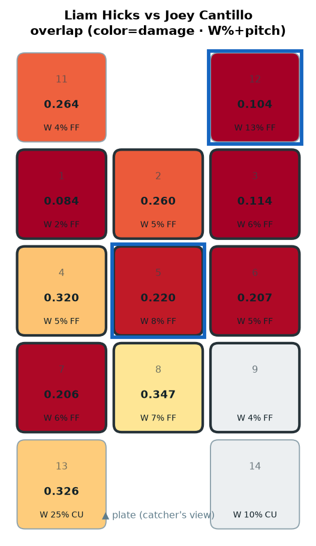
COLD HEART ← mainly FF (W 8.2%) · COLD OUT-UP-1B ← mainly FF (W 13.4%)
COLD HEART · COLD OUT-UP-1B
Richie Palacios


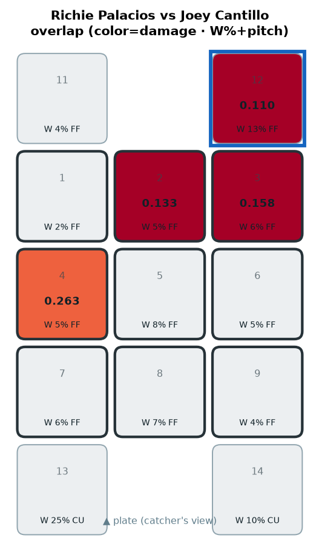
COLD OUT-UP-1B ← mainly FF (W 13.4%)
COLD OUT-UP-1B
Taylor Walls

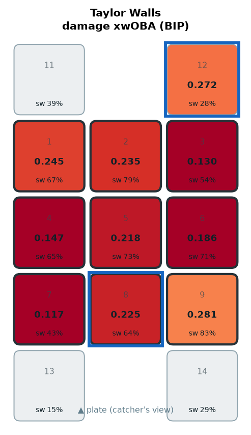
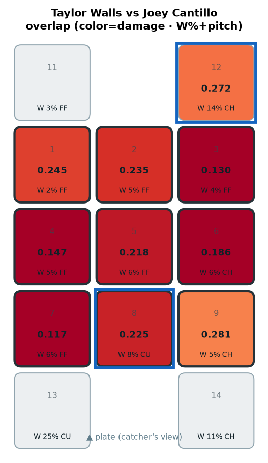
COLD OUT-UP-1B ← mainly CH (W 13.7%) · COLD LO-MID ← mainly CU (W 7.6%)
COLD OUT-UP-1B · COLD LO-MID